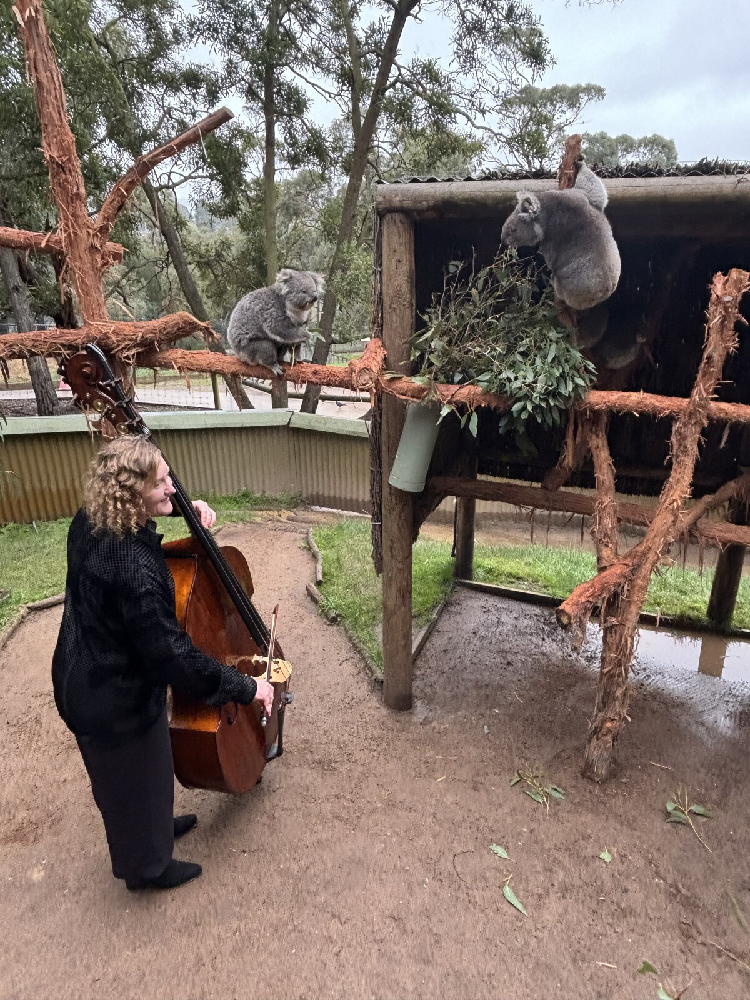
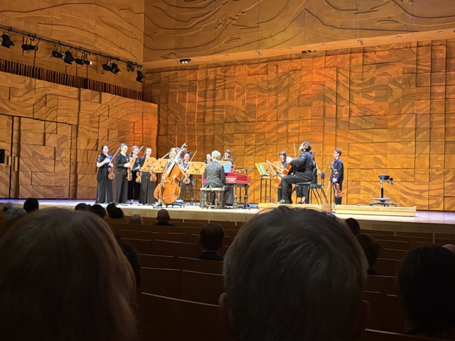
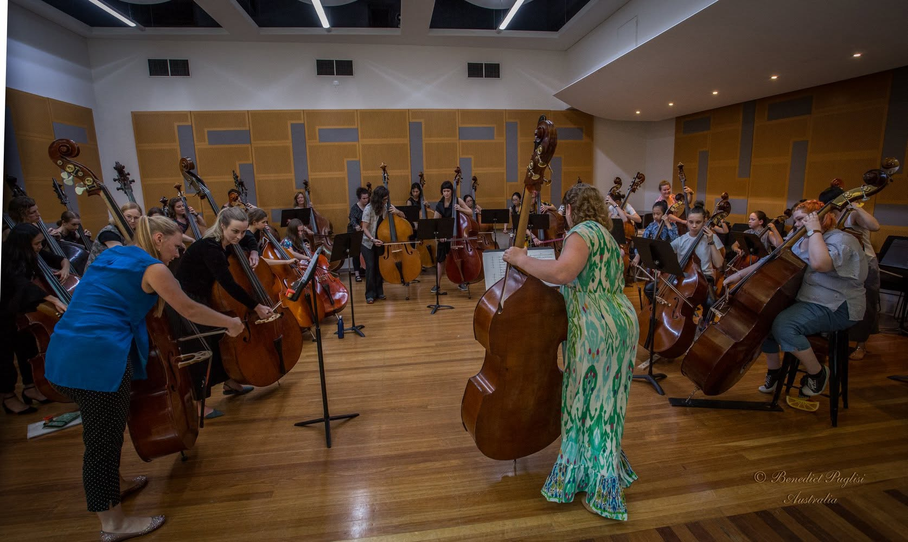

Melbourne, Australia
Emma
Sullivan.
Principal Double Bass of the Melbourne Chamber Orchestra, Emma Sullivan is an acclaimed bassist, educator, and writer with over two decades of experience on major stages across Australia, New Zealand, and the United States.
Dedicated to elevating the voice of the double bass through world-class performance, chamber residencies, mentorship, and insightful music journalism.
About
Two decades of
musical storytelling,
on and off the stage.

ES Ballarat, VictoriaDr. Emma Sullivan is a Melbourne-based double bassist, educator and writer, originally from Toowoomba, Queensland. She has served as the Principal Double Bass and Education Manager of the Melbourne Chamber Orchestra since 2009.
Equally at home on the orchestral stage and in intimate chamber settings, Emma has performed extensively with major Australian and New Zealand orchestras, including the Melbourne Symphony Orchestra and the New Zealand Symphony Orchestra.
Alongside her performing career, Emma is an active writer and educator, contributing analytical program notes, articles on non-functional requirements in technical education, and fostering the next generation of string players across Victoria.
Portfolio
Selected programs
& performances.
Ballarat Sanctuary & Regional Tours
Capturing memorable moments and community engagements amid regional wildlife initiatives across Victoria.

Nightingale — Soloist, Contrabass Sonata in G minor
Featured as a soloist performing Henry Eccles's Contrabass Sonata within a program directed by Guest Director Donald Nicolson.

Tempo Rubato — Women in Bass
A celebration and showcase of Melbourne's vibrant female and gender-diverse double bass community.
Writing & Insights
Words, essays &
program notes.
The Voice of the Low End
Exploring the historical evolution of the double bass from continuo foundation to expressive solo voice in contemporary orchestral repertoire.
NFRs in Technical Architecture
Bridging the gap between creative discipline and system resilience through instructional writing on non-functional requirements.
MCO Concert Annotations
In-depth program commentary for Melbourne Chamber Orchestra seasons, illuminating historical context for audiences.
Contact
Get in touch for
performances, writing & teaching.
Whether you are looking to collaborate on chamber projects, commission program notes, inquire about double bass lessons, or discuss upcoming concert engagements, please reach out directly.
Based in Melbourne, Victoria and available for national and international engagements.
Direct Channels
Email: emma@emmasullivan.com.au
Location: Melbourne, Australia
Orchestra: Melbourne Chamber Orchestra